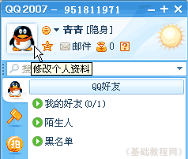

QQ聊天操作基础
十一、个人设置 返回目录
使用一段时间后，你可以对自己的QQ进行一些详细设置，从而使操作更便捷，下面我们来看一个练习；
1、登录QQ
1）双击桌面的QQ图标运行程序，出来一个登录面板，如果自动运行就不用点桌面图标了；

2）按照从上到下的顺序，输入自己的QQ号，这个比较安全些；

3）下面的自动登录和隐身登录可以先不勾，点击“登录”按钮，登录成功以后就可以显示出QQ面板来；

2、个人设置
1）在QQ长面板上，把鼠标移到最上边自己的头像那儿，点击就会出来一个资料选项面板；

2）面板分为两栏，左侧是各个设置选项，右边是设置的内容；
3）在个人资料里，可以修改昵称、头像和签名等资料，个性签名将显示在聊天窗口上；
4）点“更改头像”可以给自己选一个头像，等级高了还可以上传头像；
3、系统设置
1）点击左侧的“系统设置”项，进入系统设置，里面有基本设置、登录、声音、热键等设置选项，
基本设置里可以对陌生人、视频请求进行设置；
2）登录选项里可以选择是否自动登录、显示迷你首页等，高级选项一般不用改它；

3）热键设置里，设置聊天的各个键盘快捷键，也可以设为“无”；
4）声音设置里有各种消息的提示音，点“播放”按钮可以听听，也可以去掉勾，禁止声音提示；
5）在文件、视频设置中，可以设置文件和视频截图的保存文件夹；

本节学习了个人选项设置的基本方法，如果你成功地完成了练习，请继续学习下一课内容；
本教程由86团学校TeliuTe制作|著作权所有
基础教程网：http://teliute.org/
美丽的校园……
转载和引用本站内容，请保留版权信息和本站链接。